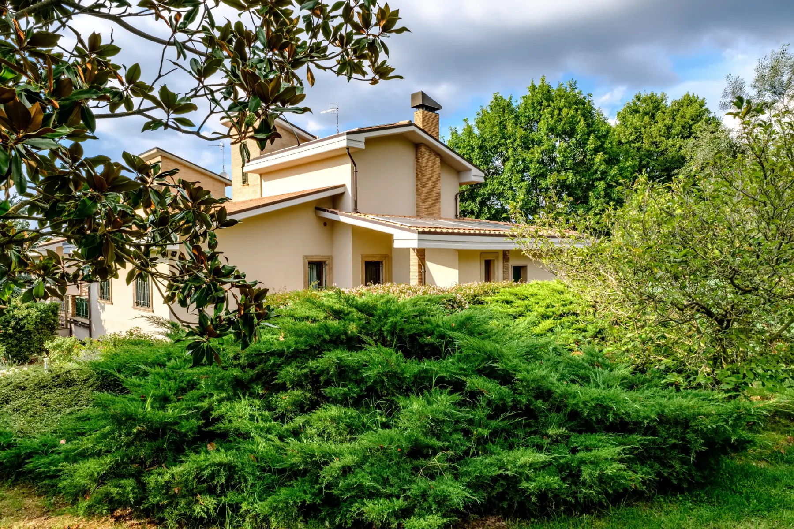
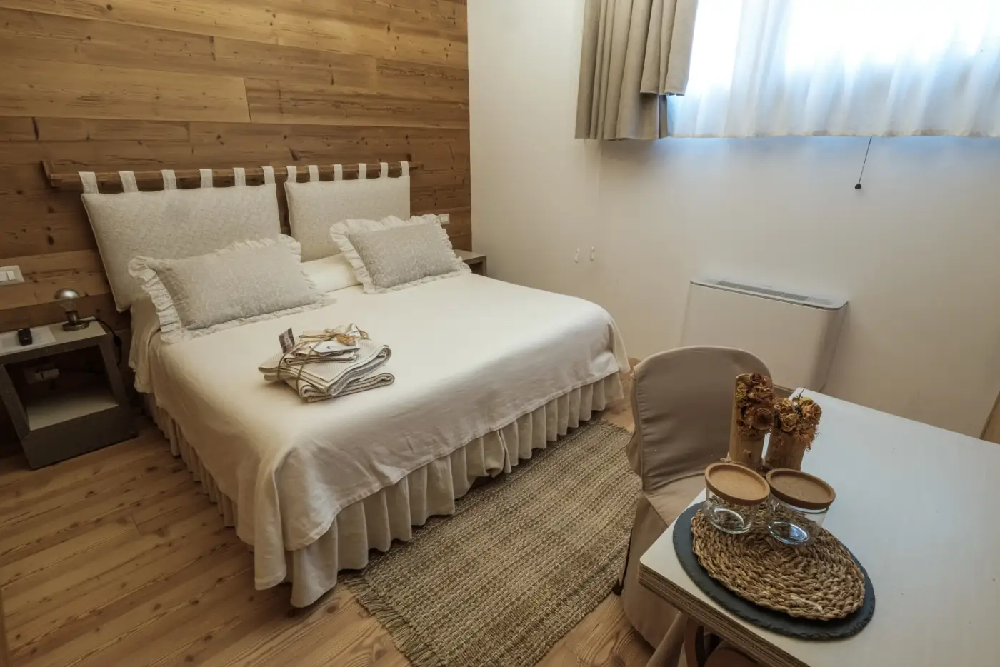
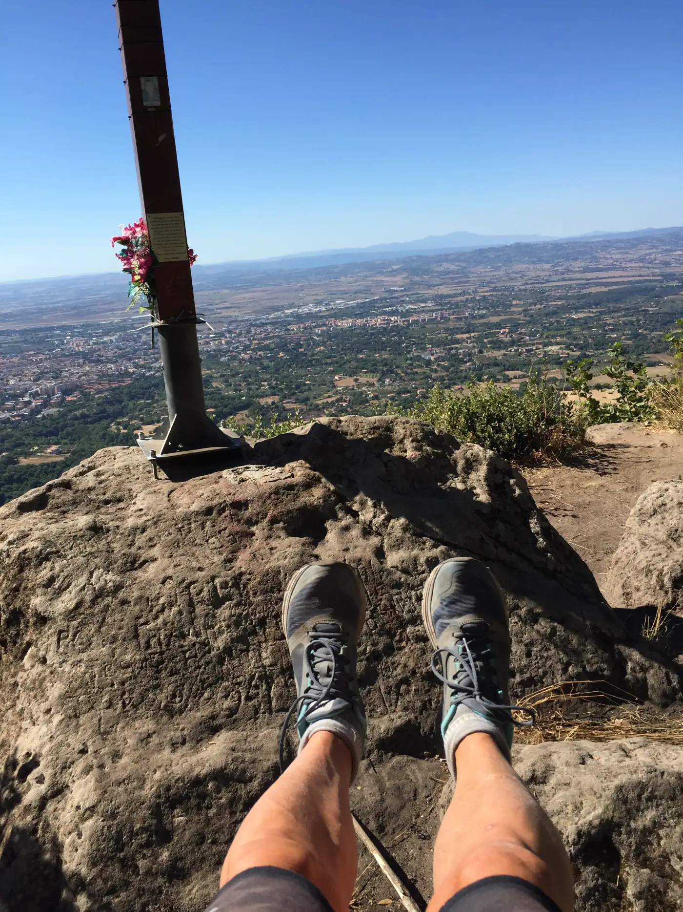
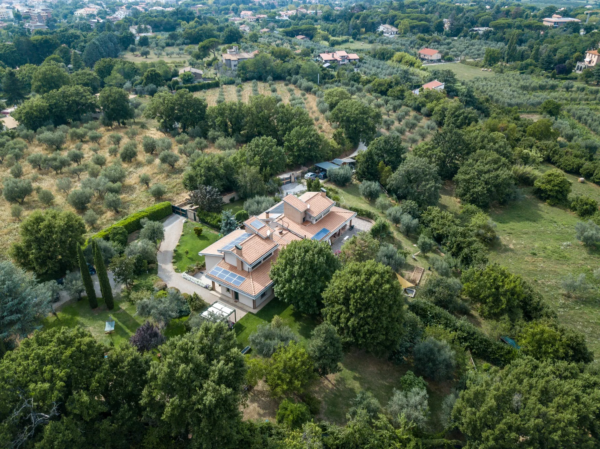

Una dimensione raccolta per condividere la struttura senza perdere privacy e cura.
Viterbo, Tuscia
Respira oltre il rumore. Trova il tuo tempo
Una country house biosostenibile nel verde: camere intime, colazione biologica, vasca riscaldata a legna e, su richiesta, l'intera location in esclusiva per gruppi.
Bio&B Italyke
La quiete, il legno sotto i piedi, il verde appena fuori dalla finestra
Bio&B Italyke è un piccolo rifugio nella campagna di Viterbo, nato per chi cerca una sosta naturale senza rinunciare alla cura: materiali bio, colazioni fatte in casa, spazi raccolti e la possibilità di vivere tutta la casa in esclusiva.
Intera location
La casa tutta per il tuo gruppo
Per famiglie, amici, ritiri, seminari e piccoli eventi, Bio&B Italyke può diventare uno spazio riservato: camere, living, giardino, vasca e colazione organizzati intorno al vostro tempo.
Camere, esterni e spazi comuni diventano il vostro ritmo per tutta la durata del soggiorno.
Vasca, cene, colazioni e momenti di gruppo si organizzano direttamente con noi.

Filosofia
Accogliere con misura, lasciando spazio alla natura
Non cerchiamo effetti speciali. Preferiamo luce, silenzio, biancheria scelta bene, profumi semplici, legno naturale e una relazione diretta con chi arriva.
La casa è pensata per coppie, viaggiatori curiosi, piccoli gruppi e persone che vogliono ritrovare un ritmo più umano tra giardino, colazione, vasca e territorio.
Scegli il tuo ritmo
Ogni pagina racconta un modo diverso di vivere la casa

Bioedilizia
Materiali naturali, attenzione ai consumi e ambienti pensati per il benessere quotidiano.
Km zero
Colazioni e proposte gastronomiche legate ai prodotti della Tuscia e alla stagionalità.
Silenzio
Un contesto verde, raccolto, lontano dalla frenesia ma vicino al centro di Viterbo.
Fibre naturali
Tessuti, biancheria e dettagli scelti per una sensazione semplice e pulita.

Il riposo
Stanze essenziali, colazione bio, prenotazione diretta
Il soggiorno è pensato per essere chiaro fin dal primo passaggio: puoi controllare disponibilità e tariffe direttamente dal sito, scegliendo date e ospiti in tempo reale. Per servizi speciali, vasca o gruppi, restiamo sempre disponibili con una proposta su misura.
Esperienze memorabili
Piccoli riti per rendere il soggiorno vostro

Aperitivo a bordo vasca
Prodotti locali, vino bio e acqua calda a legna nel giardino della casa.

Benessere su richiesta
Massaggi, yoga e tempi lenti da comporre secondo disponibilità e stagione.

Tuscia a raggiera
Terme, Viterbo medievale, laghi vulcanici, borghi, boschi e cammini.

Contatto diretto
Raccontaci che soggiorno immagini
Date, numero di ospiti e camere: ora puoi prenotare direttamente dal sito, con disponibilità e tariffe aggiornate in tempo reale. Per vasca, cena, gruppi o richieste particolari, scrivici e costruiamo insieme il soggiorno.
Gli ultimi momenti da @bbitalyke
Camere in legno naturale, colazione bio, giardino e vita lenta nella campagna di Viterbo.